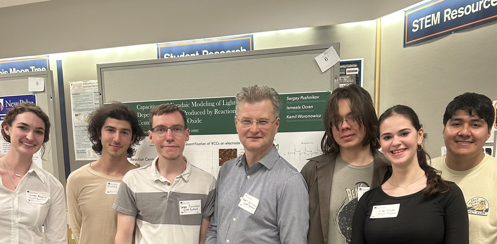

Projects
A curated selection of projects and research.

HERMES Mercury Ice Sample Return Mission
Lead a 4-person team developing mechanical systems for a Mercury polar ice sample return mission concept — cryogenic sample storage, robotic sample acquisition, and ascent vehicle integration for permanently shadowed craters. Selected to present at AIAA SciTech 2027.

Label-Free Electrochemical Biosensor for SARS-CoV-2 Detection
Research intern worked on the development of an ultra-sensitive, label-free electrochemical biosensor using ACE2-functionalized graphene oxide electrodes for COVID-19 spike protein detection, achieving femtomolar sensitivity with potential for portable diagnostic applications.
Pod Bot — Two-Wheeled Robot & Multi-Robot Control App
Designed a two-wheeled robot in Fusion 360 over four design iterations and prepared an engineering drawing package. Built a control app from scratch with AI coding agents that lets users add any number of robots and control them all from one console.
Aluminum Step Ladder — FEA & GD&T
SolidWorks static FEA of a 6061-T6 ladder with a mesh convergence study, evaluating factor of safety against OSHA Type IA (≥ 3.3), plus a full GD&T drawing package for eight parts per ASME Y14.5-2018.